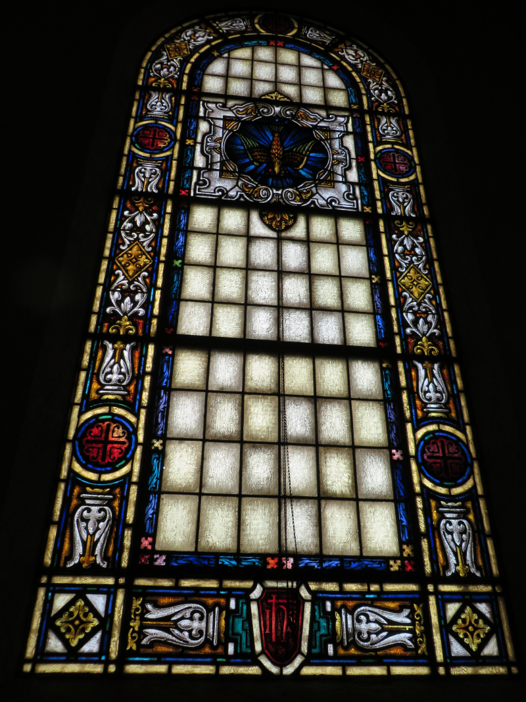

Mount Pleasant Plains, Washington, DC
The Greater First Baptist Church is grounded in a strong tradition of faith, education, and service. From its earliest days, the church has emphasized sound biblical teaching, spiritual formation, and preparation for ministry that equips believers to serve both within the church and throughout the broader community.
Throughout its history, the church has been shaped by dedicated pastoral and ministerial leadership committed to preaching the Gospel, nurturing disciples, and advancing the mission of Christ. This journey reflects a balance of tradition and growth, honoring foundational values while responding to the evolving needs of the congregation and community.
Leadership at The Greater First Baptist Church has consistently encouraged the development of ministries that strengthen worship, education, outreach, and service. These efforts have supported spiritual growth and fostered a culture of engagement, compassion, and stewardship.
The church continues to be guided by a clear and enduring mission centered on glorifying God. Leadership has remained focused on faithful worship, biblical teaching, and meaningful ministry that serves individuals, families, and the surrounding community.
Through thoughtful leadership, existing ministries have been strengthened and new initiatives introduced to meet spiritual, educational, and practical needs. The church remains committed to ministering effectively in biblical, cultural, and technological contexts.
The Greater First Baptist Church encourages believers to look beyond the walls of the church and share the Gospel locally and globally. Outreach efforts reflect a commitment to service, fellowship, and witness that extends the church's mission to diverse communities.
Each year, the church embraces guiding themes that focus the congregation on faith, growth, and purpose. These themes provide spiritual direction, encouragement, and unity, helping members remain grounded during times of challenge and change.
The church actively engages with community organizations, faith based councils, and service initiatives that promote collaboration, compassion, and positive impact. Through these partnerships, The Greater First Baptist Church continues to serve as a trusted and active presence in the community.
The Greater First Baptist Church is a family of believers united in worship, service, and mutual support. The congregation values fellowship, shared responsibility, and the nurturing of gifts that strengthen the life of the church.
Building upon a legacy of faithful leadership and service, The Greater First Baptist Church honors its past while looking forward with hope. The church remains committed to carrying forward its mission with integrity, faithfulness, and dedication for generations to come.
The mission of The Greater First Baptist Church is to love God, to love others, and to magnify the name of Jesus Christ.
The vision of our church is to glorify our God and Savior, Jesus Christ, to make true disciples throughout all the nations by means of missionary activity and support, to minister the ordinances, to edify believers, and to do all that is sovereignly possible and biblically permissible to magnify the name of Jesus.